🏍️ Yamaha MT-07 2016 (gen 2014-17) — tylny bagażnik / rack pod top case
⚡ TL;DR — 3 drogi
🇸🇪 Pewniak lokalny SE: Givi 2118FZ z sulas.se — 850 kr (1 szt. na stanie! +99 kr wysyłka = 949 kr). Płyta Monokey osobno: używana na Blocket od 300 kr (topbox z płytą, Kumla) albo nowa ~300-900 kr. link ✅ 200
💰 Najtaniej "kup i przykręć" (płyta w komplecie): AliExpress dedykowany 2014-17 — 1125 SEK, 4.6★ (30 sold, recenzja właściciela MT-07 2017 potwierdza pasowanie). Jedyna opcja <1500 kr z płytą w zestawie. link ✅ 200
🔧 Najtaniej w ogóle (używka + forwarder): Allegro 280 zł ≈ 742 kr — używany stelaż OEM z płytą Givi Monokey (brakuje 2 wsporników + 2 tulejek) + Paczka Szwecja 120 zł → ~400 zł ≈ 1060 kr total. Ryzyko: dokończyć wsporniki. link ✅ (DataDome — otwórz w przeglądarce)
👀 Bonus lokalny: FB Marketplace Bromma — „fäste till top box Yamaha MT-07" za 499 kr (wymaga logowania FB). Dodane 03.07 — może być sprzedane, trzeba napisać do sprzedawcy.
✅ Kompatybilność potwierdzona u producentów dla gen 2014-17: Givi 2118FZ · Kappa KZ2118 · SW-Motech Street-Rack GPT.06.506.16000/B (EAN 4052572051160) · Shad Top Master Y0MT78ST (13-24) · H&B Sportrack 6704537 00 01. Part-numery 2018+/2021+/Tracer nie pasują (detale w sekcji Pułapki).
Karty zakupowe (goły rack | załadowany)
1. Givi 2118FZ Najtańszy pewniak SE GIVI 2118FZ
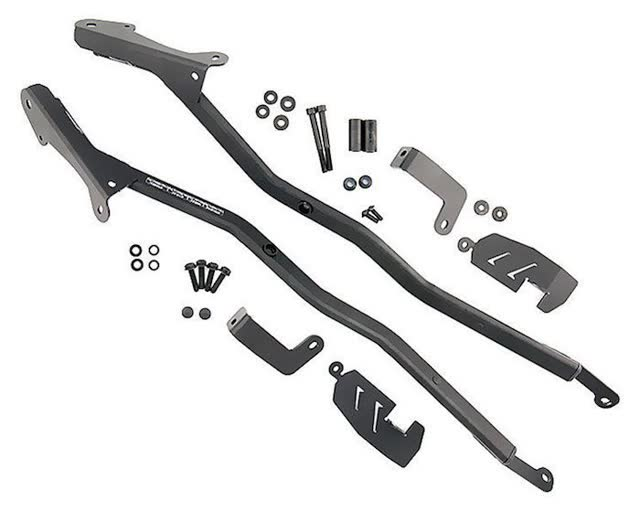
Goły rack: rozłożony stelaż z kompletem śrub (katalogowe foto OLX)
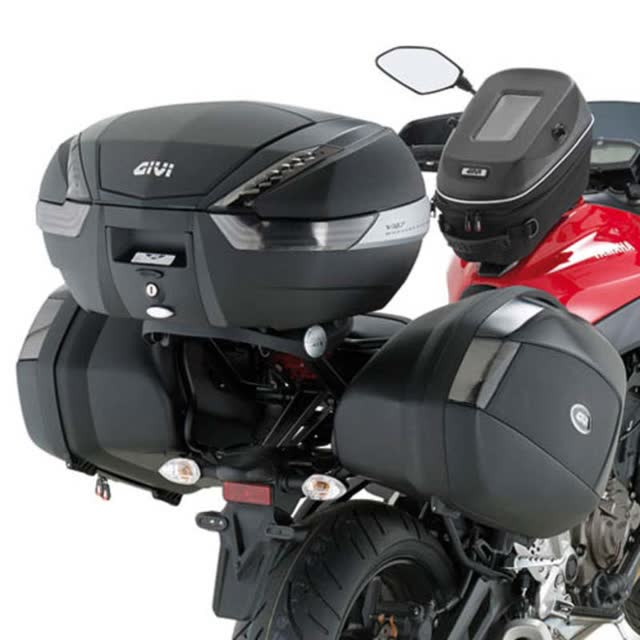
Załadowany: 2118FZ + kufier Monokey V47 (foto z PDP sulas.se)
| Sklep | Cena | Dostawa | Razem ≈ | Link (zweryf.) |
|---|---|---|---|---|
| 🇸🇪 sulas.se — 1 szt. na stanie | 850 kr (przekreślone 1600) | 99 kr | 949 kr | sulas.se ✅200 |
| 🇪🇸 acmotos.com (Black Friday −22%) | €111.93 (reg. €143.51) | €15.90 UPS do SE | €127.83 ≈ 1460 kr | acmotos ✅200 |
| 🇵🇱 OLX (Wisła Mała, nowy, FV 23%) | 360 zł ≈ 955 kr | 30 zł PL / forwarder 120 zł | 480 zł ≈ 1275 kr | olx.pl ✅200 |
| 🇸🇪 sportisgood.se | 1340 kr | ~0-99 kr | ~1340-1440 kr | sportisgood ✅200 |
| 🇸🇪 gmoto.se ("central bagagehylla utan plåt") | 1406 kr | ? | ~1406+ | gmoto ✅ (DataDome — otwórz w przeglądarce) |
| 🇸🇪 lugnetsmccenter.se (Monorack arms) | 1650 kr | od 0 kr | 1650 kr | lugnets ✅200 |
| 🇵🇱 Allegro (motobagaz) | 432 zł ≈ 1145 kr | 14,99 zł PL / forwarder | ~1465 kr | allegro ✅ (DataDome) |
Ramiona MONOKEY/MONOLOCK — płyta pod kufier osobno (M5/M7/M8/M9/M10 albo M5M/M6M). Płytę używaną znajdziesz na Blocket: topbox Givi ~40L z płytą 300 kr (Kumla ✅), Givi 39L z płytą 400 kr (Växjö ✅), sama płytka Monolock+fästjärn 300 kr na Traderze (link). Fitment givi.it (14>17) ✅ · instrukcja montażu PDF.
2. Kappa KZ2118 Najtańszy nowy dedyk PL KAPPA KZ2118

Goły rack: elementy stelaża (foto listingu Allegro)
Załadowany (ilustracyjne): MT-07 z topcase + bokami — YouTube: Installing Yamaha MT07 Top Box (Outback Polaks)
| Sklep | Cena | Dostawa | Razem ≈ | Link |
|---|---|---|---|---|
| 🇵🇱 Allegro (motocyklowo24_pl, NOWY) | 419,93 zł ≈ 1113 kr | darmowa PL / forwarder 120 zł | 540 zł ≈ 1430 kr | allegro ✅ (DataDome) |
Kappa = siostrzana marka Givi — KZ2118 to odpowiednik 2118FZ (dedyk 14-17, płyta osobno). W UE: Kappa rzadko dostępny online; PL ma najtaniej.
3. SW-Motech Street-Rack GPT.06.506.16000/B · EAN 4052572051160

Goły rack: Street-Rack czarny (fc-moto)
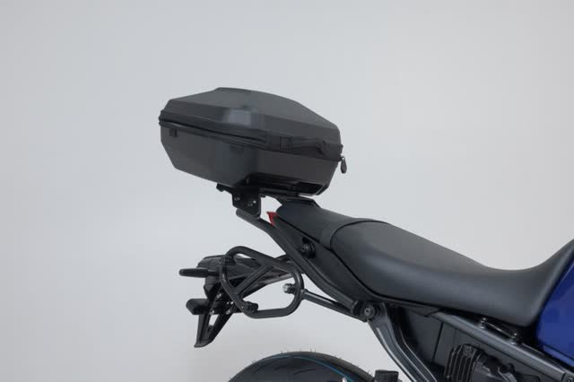
Załadowany: Street-Rack + topcase na MT-07 (owner r/motorcycles: „compatible with my Yamaha MT-07")
| Sklep | Cena | Dostawa | Razem ≈ | Link |
|---|---|---|---|---|
| 🇩🇪 fc-moto.com | £95.35 excl VAT ≈ 1250 kr | ~€12-20 do SE | ~1400-1470 kr | fc-moto ✅200 |
| 🇵🇱 Allegro (Street-Rack 14-17) | 629 zł ≈ 1667 kr | PL / forwarder | ~2000 kr | allegro ✅ (DataDome) |
| 🇭🇺 motorcorner.com | €132.18 ≈ 1507 kr | €8.95 | ~1610 kr | motorcorner ✅200 |
| 🇬🇧 alchemyparts.co.uk | £121.99 ≈ 1600 kr | UK only ⚠️ | — | alchemyparts ✅200 |
| 🇩🇪 amazon.de (B0BLT8BG47) najszybsza dostawa | 1925.50 + 120.66 wys. | do SE pon 30.11 | 2046 kr | amazon.de ✅200 — ⭐5.0 (4 oceny, „pasuje idealnie") |
Płaski rack 5 mm alu — adapter-płyta pod top case osobno (GPT.00.152.35000/B, pasuje Givi/Shad/Krauser) albo torby SysBag. Uwaga na podróbki numeracji: 4052572212202 = gen 18-24, Tracer = inny SKU.
4. Shad Top Master Y0MT78ST jedyny nr na 13-24
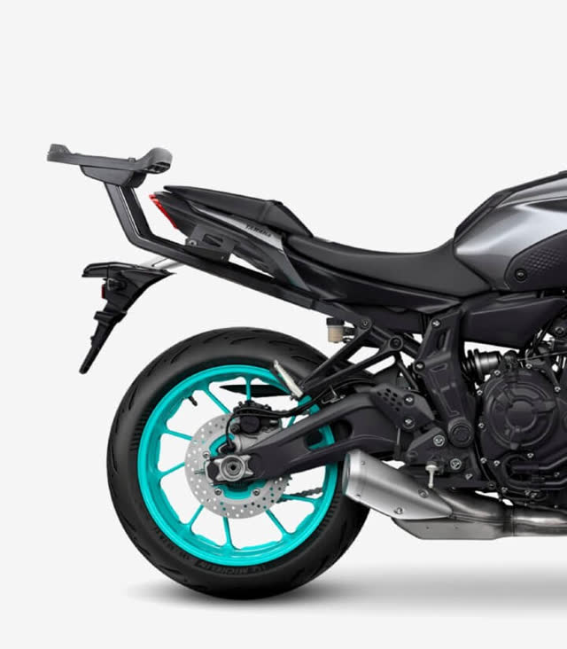
Goły rack: zamontowany na MT-07 (acmotos galeria)
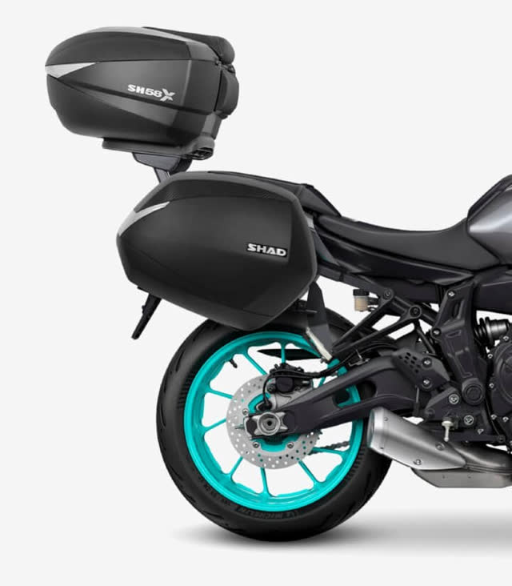
Załadowany: rack + kufier SHAD SH58X na MT-07 (acmotos galeria)
| Sklep | Cena | Dostawa | Razem ≈ | Link |
|---|---|---|---|---|
| 🇪🇸 tradeinn/motardinn | $132.99 ≈ 1350 kr | ~€10-20 (koszyk) | ~1450-1550 kr | tradeinn ✅200 |
| 🇪🇸 acmotos.com (BF −15%) | €147.69 (reg. €173.75) | free >€70 | ~1684 kr | acmotos ✅200 |
5. Hepco & Becker Sportrack ✗ zabiera miejsce pasażera 6704537 00 01
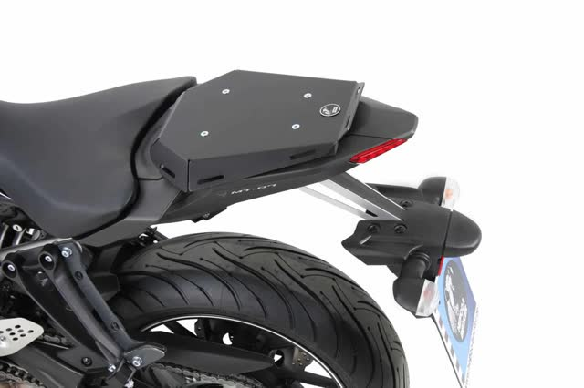
Załadowany: Sportrack z kufrem (foto producenta)
| Sklep | Cena | Dostawa | Razem ≈ | Link |
|---|---|---|---|---|
| 🇩🇪 hepco-becker.de (producent) | €185 | excl shipping | ~2110 kr +wys | hepco-becker ✅200 |
| 🇩🇪 moto24.com | €189 (was €210) | SE → przekierowanie na moto24.se (CF) | ~2155 kr +wys | moto24 ✅200 |
| 🇪🇸 tradeinn | $195.99 (BF −15% → $186.19) | koszyk | ~1890-1990 kr | tradeinn ✅200 |
Pułapka: montowany zamiast siedzenia pasażera — z rackiem nie przewieziesz pasażera (zdjęcie/założenie siedzenia = demontaż racka). Montaż pod kluczyk stacyjki. Tylko jeśli pasażer nie jeździ.
6. AliExpress dedykowane 2014-2017 płyta w komplecie, od 1125 kr
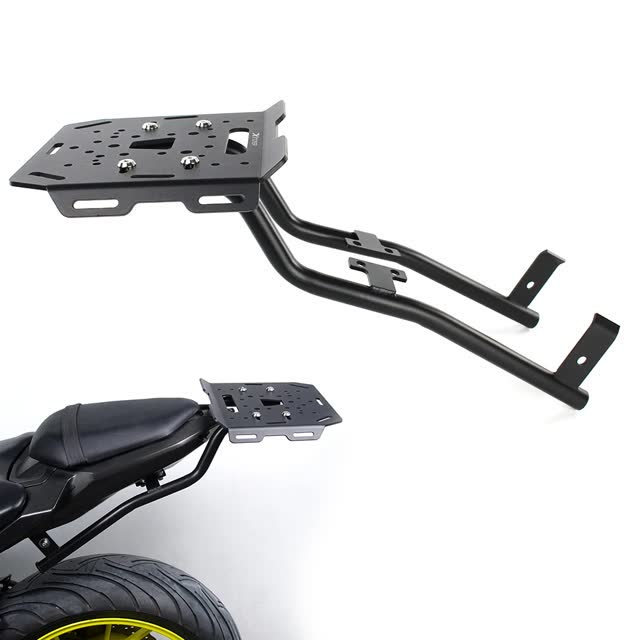
Goły rack: zamontowany na MT-07 (foto listingu #1)
Załadowany (ilustracyjne): listingi Ali nie mają fot z kufrem — tak wygląda efekt (YouTube)
| Listing | Cena | Recenzje | Link |
|---|---|---|---|
| #1 Top Case Holder Rack (alu+stal, 3.11 kg) | 1125 SEK (30-day low 1256) | 4.6★ (5): „заказывал на Ямаху МТ-07 2017… тяжёлое, явно не силумин, фурнитура в наборе" — 30 sold | item/1005008051749606 ✅200 |
| #2 Rear Luggage Rack (czarny) | 1159 SEK | 5.0★ (2): „excellent support pour ma MT07 2017" (05.2026) | item/1005008053202895 ✅200 |
| #3 = #1 droższy wariant | 1233 SEK | 5.0★ (1); dostawa >1 mies. | item/1005008206741237 ✅200 |
Jedyna opcja <1500 kr z górną płytą w komplecie (alu plate + stalowe szyny boczne) — „without modifications". Dwie niezależne recenzje potwierdzają pasowanie do roczników 2017 (= gen 14-17). Wysyłka z Chin ~2-4 tyg.; VAT zwykle rozliczany przy zamówieniu (IOSS).
⚠️ Na Ali ~60% wyników „MT-07 rack" to gen 2018+/2021+ — nie trafią na 2016. Uniwersalne półki 28-60 EUR bez dedykowanych punktów = pomijam (ryzyko montażu, 0 recenzji).
7. Amazon (se/de) — generyki i ciekawostki bez historii recenzji

Goły rack: generyk CNC (B0G1X4TMMF)
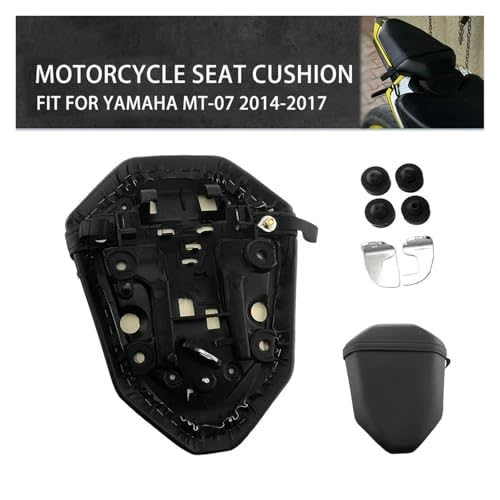
Załadunek: siedzisko-półka z topcase „FIT FOR YAMAHA MT-07" (B0H6NZSF54)
| Produkt | Cena total do SE | Status | Link |
|---|---|---|---|
| Generyk CNC „MT07/FZ07 2014-2020" (B0G1X4TMMF) | 744.55 kr (714.33+30.22) | 0 recenzji, „uniwersalny" w opisie — najtańszy total, dostawa 15-22.12 | amazon.de ✅200 |
| Ohocean rack multi-fit (B0G24GCSFY) | 774 kr (662+112) | jedna lista na 6 moto = uniwersal; 0 recenzji | amazon.de ✅200 |
| Siedzisko + odpinana półka „MT-07/FZ-07 2014-2017" (B0H6NZSF54) | 1097 kr, free delivery | fit wprost 14-17, ale to półka na kask/torba — nie pod topcase Monokey | amazon.se ✅200 |
Markowe Givi/Shad na Amazonie dla 14-17: brak (tylko 18+/Tracer — patrz pułapki). Generyki = loteria montażowa; bierz tylko jeśli budżet <800 kr jest twardy.
8. OEM Yamaha i używki PL (Allegro/OLX)
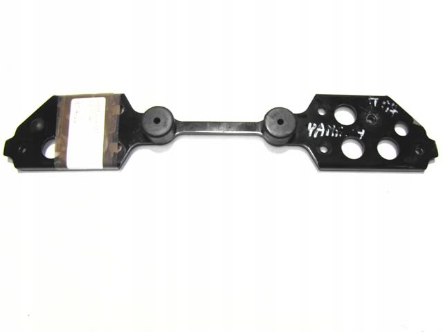
Goły: OEM „stelaż tył" 99 zł (element z logo Yamaha)

Goły rack: używany OEM + płyta Givi Monokey — 280 zł (brakuje 2 wsporników+2 tulejek)
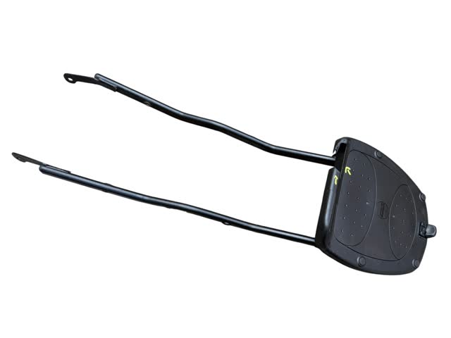
Goły rack: OEM „mocowanie kufra" 180 zł (14-20R)
| Oferta | Cena | Uwaga | Link |
|---|---|---|---|
| OEM „stelaż tył tylni" 13-17 NOWY | 99 zł ≈ 262 kr (+20 zł wys.) | prawdopodobnie fabryczny uchwyt, nie pełny rack pod kufer — spytać sprzedawcę o foto montażu | allegro ✅ (DataDome) |
| OEM „mocowanie kufra / stelaż" 14-20R NOWY | 180 zł ≈ 477 kr (+26 zł) | zakres 14-20 = pasuje; OEM nr MT07 01 | allegro ✅ (DataDome) |
| Używany stelaż + płyta Monokey ⭐ | 280 zł ≈ 742 kr (+14,99 zł) | brakuje 2 krótkich wsporników i 2 tulejek (sprzedawca może taniej bez płyty); z forwarderem ≈ 1060 kr total | allegro ✅ (DataDome) |
| Płyta Givi używana (OLX) | 20-50 zł | sprawdzić typ (Monokey M5/M7 vs Monolock M5M) | olx ✅200 |
9. Używane Szwecja (Blocket/Tradera/FB) dedykowanych MT-07: 0-1
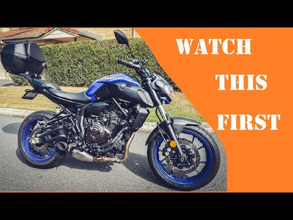
W rezultacie szukać tak: Givi 39L z płytą 400 kr — Blocket Växjö (foto: blocket item)
| Co | Cena | Gdzie | Link |
|---|---|---|---|
| FB MP: fäste top box Yamaha MT-07 (Bromma) | 499 kr | jedyny dedykowany rack MT-07 w SE wtórnym rynku dziś; status do potwierdzenia (lipiec) | FB (login) ⚠️ |
| Givi toppbox ~40L z fästplatta (Kumla) | 300 kr | box+płyta — na istniejący rack | blocket ✅200 |
| Givi toppbox 39L + platta (Växjö) | 400 kr | box+płyta | blocket ✅200 |
| Topbox z fästplatta nowy (Motala) | 200 kr | uniwersalny | blocket ✅ |
| Givi Monolock platta + fästjärn (Tradera) | 300 kr | płytka + poprzeczki | tradera ✅200 |
| Givi Wingrack + 2×E36 + platta (Spånga/Dalby) | 1900 kr | uniwersalny nośnik | blocket ✅200 |
30 fraz × Blocket (~230 unikalnych), 25 fraz × Tradera (463), 34 frazy × FB: zero dedykowanych bagażników MT-07 14-17 poza FB 499 kr. Wniosek: rynek wtórny SE nie ma tego produktu — realna droga to nowy (SE/EU/Ali) albo używka PL z forwarderem.
⚠️ Pułapki kompatybilności (2016 = gen 2014-17)
2018+ / 2021+ / 2024+ to INNE numery: Givi 2140FZ (18>20), SR2173 (25>26); SW-Motech 4052572212202 (18-24), 4052572283431 (24-); SHAD Y0MT76ST = Tracer. Na Allegro/Amazonie większość ofert „MT-07" to nowsze geny — nie pasują.
Tracer ≠ naked: 2130FZ / PLXR2130 / SW-Motech „MT-07 Tracer (16-)" to Tracer 700 — inna rama. Na Allegro jest „uniwersalny" 2130FZ za 300 zł — omijać.
Płyta osobno: Givi 2118FZ / SW-Motech Street-Rack / Shad Y0MT78ST nie zawierają płyty top case — dolicz 300-900 kr nowa / 20-300 kr używana. Wyjątki z płytą: Ali #1/#2 (płyta w komplecie), Allegro 280 zł używany, H&B z płytą H&B.
H&B Sportrack zastępuje siedzenie pasażera → bez pasażera przy zamontowanym. Alternatywa bez tej wady: SW-Motech Seat-Rack (używany 250 zł OLX ✅200 — też na miejsce siedzenia, ale zdejmowany w 10 s).
Givi + płyty M8A/M8B/M9A/M9B: brak światła stop / zdalnego otwierania, „trzeba przebicie obudowy" (fitment producenta). Bezpieczne płyty: M5/M7/M10, Monolock M5M/M6M.
Przycinanie paneli: aftermarket/uniwersale mogą wymagać cięcia boczków (forum ownerskie + listing eBay). Dedyki montują się bez cięcia.
Limit ładunku: Givi podaje ~6 kg max na racku — kufier + zawartość z głową.
🚚 Wysyłka do SE — ukryte koszty
| Ścieżka | Koszt | Kiedy |
|---|---|---|
| 🇸🇪 Sklep SE (sulas/sportisgood/gmoto/lugnets) | 0-99 kr (sulas 99; free >2000 kr) | najszybsza opcja, zero cła/VAT formalności |
| 🇪🇸 acmotos → SE | €15.90 UPS 0-5 kg; free >€140 | VAT ES w cenie; 3-5 dni roboczych |
| 🇩🇪 fc-moto / tradeinn → SE | koszyk, ~€12-20 | ceny fc-moto excl VAT (UK locale) — doliczyć |
| 🇵🇱 Forwarder PL→SE (Paczka Szwecja/JDC) | 120 zł ≈ 318 kr (do 10 kg; lub 350 SEK przy odbiorze) · alternatywy: epaka od ~101 zł, Euroscandia 220 zł | Allegro/OLX sprzedają standardowo tylko PL (isInternationalSeller: false) — wysyłka zagraniczna na życzenie sprzedawcy albo forwarder |
| 🇨🇳 AliExpress → SE | zwykle wliczone/checkout | VAT 25% rozliczany przy zamówieniu (IOSS); dostawa 2-4 tyg. |
Cło UE wewnątrz UE = zero. Z Chin: racki alu zwykle <progu celnego cła (tylko VAT). Paczka 50×30×15 cm = 4,5 kg volumetric — mieści się w tarze 0-5 kg.
📋 Coverage table
| Źródło | Status | Metoda / rungi | Wynik |
|---|---|---|---|
| Blocket (30 fraz) | ✅ COVERED | skrypt blocket_search.py | ~230 unikalnych; 0 dedykowanych MT-07 |
| Tradera (25 fraz) | ✅ COVERED | skrypt padł (F5) → Lightpanda CDP | 463 ogłoszeń; 0 dedykowanych |
| FB Marketplace (34 frazy) | 🟡 PARTIAL | skrypt fb_mp_search (SSR fallback; gql padł, brak cookies FB) | 1 dedykowany (499 kr); zdjęcia za login-wallem |
| AliExpress (9 fraz) | ✅ COVERED | aliexpress_search/item/reviews.py | ~90 listingów; 3 dedykowane 14-17; WAF po 9. frazie (bez rocznika w query) |
| Allegro (7 fraz) | ✅ COVERED | curl → DataDome 403 → Bright Data Web Unlocker (country=pl) | 221 ofert; 8 dedykowanych; wysyłka PL-only |
| OLX (13 fraz) | ✅ COVERED | skrypt | 627 unikalnych; Givi 2118FZ nowy 360 zł |
| Amazon se+de (25 fraz) | ✅ COVERED | Lightpanda CDP (0 captcha) | ~205 ASIN; generyki 662-802 kr; markowych brak |
| Sklepy EU/SE (30+ domen) | ✅ COVERED | r.jina.ai → Lightpanda fallback | pełny cennik 2118FZ/SWMR/Y0MT78ST/Sportrack; Puig = brak produktu |
| Fitment producentów | ✅ COVERED | givi.it, shad.es, sw-motech.com, hepco-becker.de, puig | part-numery 14-17 potwierdzone H |
| Fora/Reddit/YT (owners) | ✅ COVERED | web_fetch + DDG snippets (reddit 403 z Pi) | pułapki: przycinanie paneli, limity, pasażer |
| Weryfikacja linków (final) | ✅ DONE | curl HEAD batch | 18× HTTP 200; Allegro/gmoto 403 = DataDome (dla człowieka w przeglądarce OK); FB 400 = login wall |
| Zdjęcia (loaded/bare) | ✅ DONE | 28 plików pobranych → vision check (co pokazuje każde) | każdy kandydat: min. 1 goły + 1 załadowany/ilustracja |
🧾 Metodologia
R1 (9 agentów równolegle, ~20 min): Blocket, Tradera, FB MP, AliExpress, Allegro (Bright Data retry po DataDome 403), OLX, Amazon se/de (Lightpanda), sklepy EU/SE, fitment+fora. R2: koszty wysyłki (Paczka Szwecja/epaka/Euroscandia, acmotos/tradeinn/fc-moto do SE), weryfikacja sulas 850 kr (Artnr 2118FZ, pełny stelaż, płyta osobno — cyt z PDP), batch HTTP check 23 linków, pobranie 28 zdjęć i wizualna klasyfikacja (model vision: które zdjęcie = goły rack, które = załadowany, które = inny produkt — odrzucone m.in. foto Givi „PLX2118" pokazujące Tracer 900 i grafiki materiałowe Ali). Filtry: tylko gen 2014-17 (wyjątek Shad 13-24 wg producenta); używane OK; cel = najtaniej.
Źródła surowe: memory/research/mt07-luggage-rack-2026-11-20/raw/*.md · zdjęcia: img/mt07-rack/ · wygenerowano 2026-11-20 ~14:10 CET.
↑
Źródła surowe: memory/research/mt07-luggage-rack-2026-11-20/raw/*.md · zdjęcia: img/mt07-rack/ · wygenerowano 2026-11-20 ~14:10 CET.